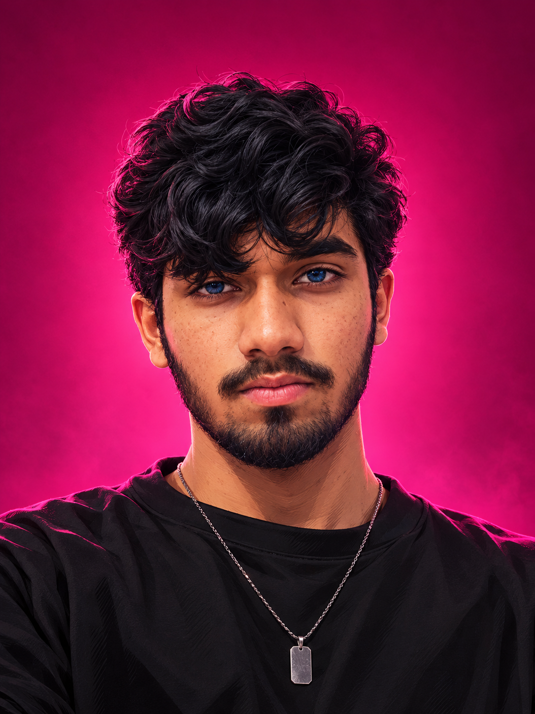
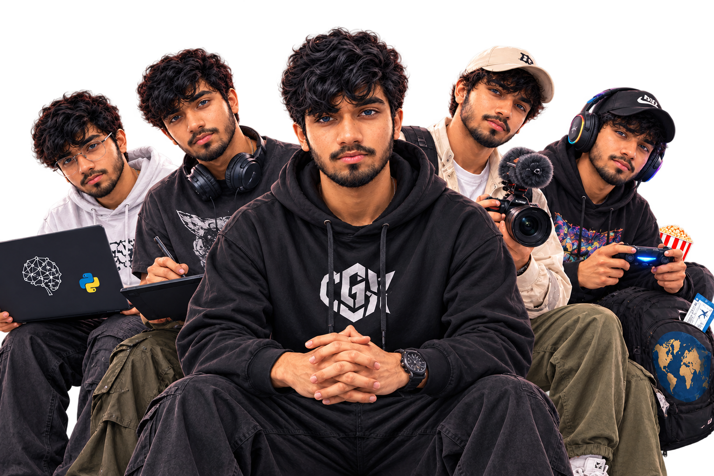

ADITYA
WALVEKAR
Designer × Developer × Creator. I turn visual ideas and emerging technology into work that feels clear, memorable and built for what’s next.

Creative thinking.
Technical execution.
A focused personal brand built around practical projects, visual craft and continuous technical growth.
Project-driven creator with practical experience across AI/ML, Python, data analytics and visual communication.
Design sensibility plus technical curiosity: shaping experiences, building logic and communicating outcomes clearly.
Growing through internships and self-directed work while building useful, human-centred technology and creative projects.

A hybrid toolkit.
Graphic
Design
Posters, identities, social media and visual systems.
Video
Editing
Cinematic edits, reels, pacing and story.
AI / ML
Systems
Python, data, ML foundations and Streamlit.
Code &
Games
C++, web, DSA, Git and gaming culture.
Projects &
internship work.
Data Alcott Systems
Applied AI, NLP and Python concepts through internship project work.
View project →SkillCraft Technology
Machine-learning internship tasks and practical project milestones.
View project →Cognifyz Technologies
Python development work focused on programming and project execution.
View project →Codec Technologies
Project-based work across AI, ML, NLP and data science.
View project →See my graphic
designs.
Explore selected product visualisation, social media creatives, posters and promotional flyers.
Open design gallery ↗Learning beyond
the screen.
A few grounding rituals that keep the creative and technical work fresh.
Things I enjoy.
TravelReading booksWatching podcastsFarmingExploring new thingsRead / reading.
GarudbharariAgnipankhBodhRavan — Sharad TandleAtomic HabitsThe 7 Habits of Highly Effective PeopleThe Psychology of MoneyIkigaiRich Dad Poor DadThe 48 Laws of PowerSecretsLearning by doing.
Hands-on internships across AI, machine learning, Python and data analytics.
Data Alcott Systems
Applied AI, NLP and Python concepts.
SkillCraft Technology
Machine-learning internship tasks.
Cognifyz Technologies
Python development internship.
CodeAlpha
AI and machine-learning projects.
Codec Technologies
AI, ML, NLP and data-science work.
CodSoft
Data analytics and data-science tasks.
Watch my
content.
Short-form ideas, edits and creator experiments live on OldHopes.
Open YouTube ↗